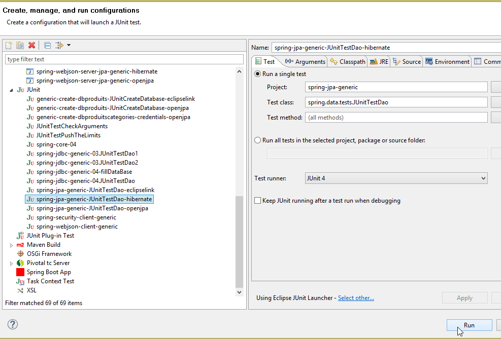
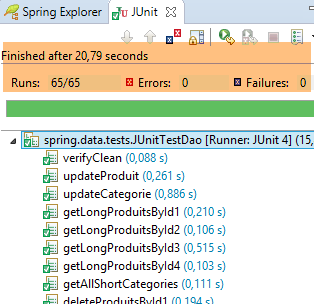
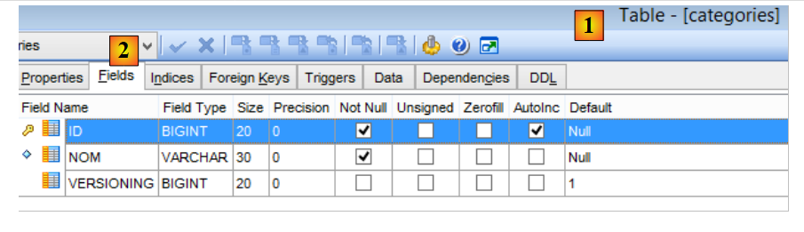
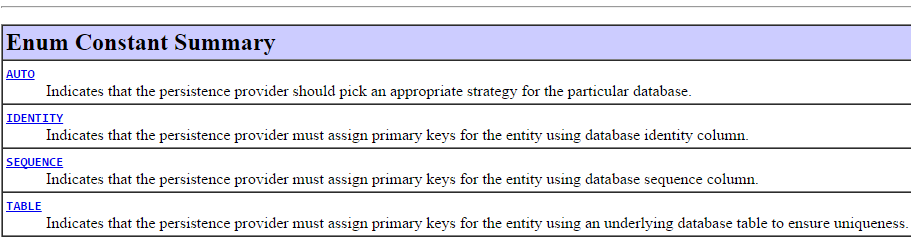
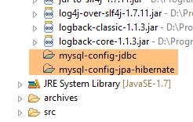
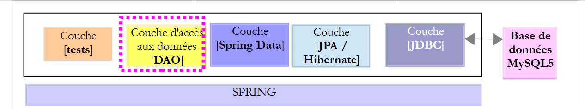
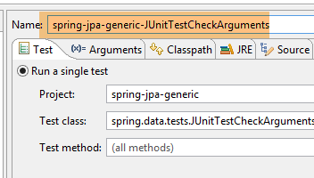
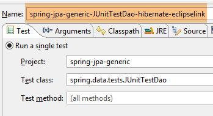

6. Spring Data JPA Hibernate
6.1. Introduction
Nous allons reprendre la base [dbproduitscategories] gérée par le projet [spring-jdbc-04] et nous allons implémenter les deux interfaces [IDao<Categorie>, IDao<Produit>] définies dans ce projet. Cela va nous permettre plusieurs choses :
- comparer les codes d'implémentation ;
- utiliser la même couche de tests ;
- comparer les performances de deux implémentations ;
 |
- la couche [JDBC] est implémentée par le projet [mysql-config-jdbc] étudié au paragraphe 3.3 ;
Nous passons maintenant aux autres couches.
6.2. Mise en place de l'environnement de travail
Avec STS, importez le projet [mysl-config-jpa-hibernate] [1] qui se trouve dans le dossier [<exemples>/spring-database-config/mysql/eclipse] [2] :
 |
Ce projet configure la couche [Spring JPA Hibernate] du projet. Chaque implémentation JPA a son propre projet de configuration.
Puis, importez le projet [spring-jpa-generic] [1] qui se trouve dans le dossier [<exemples>/spring-database-generic/spring-jpa] [2] :
 |
Ceci fait, réinitialisez l'environnement Maven (Alt-F5) de tous les projets présents dans [Package Explorer] :
 |
Puis, pour vérifier l'environnement de travail, exécutez la configuration d'exécution nommée [spring-jpa-generic-JUnitTestDao-hibernate] :
 |
Cette configuration exécute le test [JUnitTestDao]. Ce test doit réussir :
 |
6.3. Le projet de configuration de la couche JPA
 |
Ce projet a pour rôle de configurer la couche JPA de l'architecture ci-dessous :
 |
6.3.1. Configuration Maven
Le projet est un projet Maven est configuré par le fichier [pom.xml] suivant :
<project xsi:schemaLocation="http://maven.apache.org/POM/4.0.0 http://maven.apache.org/xsd/maven-4.0.0.xsd"
xmlns="http://maven.apache.org/POM/4.0.0" xmlns:xsi="http://www.w3.org/2001/XMLSchema-instance">
<modelVersion>4.0.0</modelVersion>
<groupId>dvp.spring.database</groupId>
<artifactId>generic-config-jpa</artifactId>
<version>0.0.1-SNAPSHOT</version>
<name>configuration mysql openjpa</name>
<parent>
<groupId>org.springframework.boot</groupId>
<artifactId>spring-boot-starter-parent</artifactId>
<version>1.2.3.RELEASE</version>
</parent>
<dependencies>
<!-- dépendances variables ********************************************** -->
<!-- JPA provider -->
<dependency>
<groupId>org.hibernate</groupId>
<artifactId>hibernate-entitymanager</artifactId>
</dependency>
<!-- dépendances constantes ********************************************** -->
<!-- Spring Data -->
<dependency>
<groupId>org.springframework.data</groupId>
<artifactId>spring-data-jpa</artifactId>
</dependency>
<!-- Spring Context -->
<!-- configuration JDBC héritée -->
<dependency>
<groupId>dvp.spring.database</groupId>
<artifactId>generic-config-jdbc</artifactId>
<version>0.0.1-SNAPSHOT</version>
<exclusions>
<exclusion>
<groupId>org.springframework.boot</groupId>
<artifactId>spring-boot-starter-jdbc</artifactId>
</exclusion>
</exclusions>
</dependency>
</dependencies>
<properties>
<project.build.sourceEncoding>UTF-8</project.build.sourceEncoding>
<java.version>1.7</java.version>
</properties>
<build>
<plugins>
<plugin>
<groupId>org.apache.maven.plugins</groupId>
<artifactId>maven-surefire-plugin</artifactId>
<version>2.18.1</version>
</plugin>
</plugins>
</build>
</project>
- lignes 5-7 : l'artifact Maven généré par ce projet. Les projets de configuration des autres implémentations JPA (Eclipselink et OpenJpa) utiliseront ce même artifact. Cela signifie qu'un seul de ces projets peut être actif à un moment donné. Il faut donc éviter de les avoir tous présents dans [Package Explorer]. Il n'en faut qu'un ;
- lignes 10-14 : le projet Maven parent qui fixe la version de la plupart des dépendances nécessaires au projet ;
- lignes 19-22 : la bibliothèque Hibernate ;
- lignes 25-28 : la bibliothèque Spring Data ;
- lignes 32-34 : le projet de configuration de la couche JPA s'appuie sur celui de configuration de la couche JDBC qui définit entre autres choses, le pilote JDBC du SGBD utilisé et les coordonnées de la base à utiliser ;
- lignes 35-39 : le projet de configuration de la couche JDBC inclut la bibliothèque [Spring JDBC] qui est ici remplacée par la bibliothèque [Spring Data JPA]. Aussi indique-t-on de ne pas l'inclure dans les dépendances du projet. Si elle reste, cela ne cause cependant pas d'erreurs ;
Au final, les dépendances du projet sont les suivantes :
 |
6.3.2. Configuration Spring
 |
La classe [ConfigJpa] configure le projet Spring :
package generic.jpa.config;
import javax.persistence.EntityManagerFactory;
import generic.jdbc.config.ConfigJdbc;
import org.apache.tomcat.jdbc.pool.DataSource;
import org.springframework.context.annotation.Bean;
import org.springframework.context.annotation.Configuration;
import org.springframework.context.annotation.Import;
import org.springframework.orm.jpa.JpaTransactionManager;
import org.springframework.orm.jpa.JpaVendorAdapter;
import org.springframework.orm.jpa.LocalContainerEntityManagerFactoryBean;
import org.springframework.orm.jpa.vendor.Database;
import org.springframework.orm.jpa.vendor.HibernateJpaVendorAdapter;
import org.springframework.transaction.PlatformTransactionManager;
@Configuration
@Import({ ConfigJdbc.class })
public class ConfigJpa {
// le provider JPA
@Bean
public JpaVendorAdapter jpaVendorAdapter() {
HibernateJpaVendorAdapter hibernateJpaVendorAdapter = new HibernateJpaVendorAdapter();
hibernateJpaVendorAdapter.setShowSql(false);
hibernateJpaVendorAdapter.setDatabase(Database.MYSQL);
hibernateJpaVendorAdapter.setGenerateDdl(true);
return hibernateJpaVendorAdapter;
}
// packages des entités JPA
public final static String[] ENTITIES_PACKAGES = { "generic.jpa.entities.dbproduitscategories" };
// source de données
@Bean
public DataSource dataSource() {
// source de données TomcatJdbc
DataSource dataSource = new DataSource();
// configuration accès JDBC
dataSource.setDriverClassName(ConfigJdbc.DRIVER_CLASSNAME);
dataSource.setUsername(ConfigJdbc.USER_DBPRODUITSCATEGORIES);
dataSource.setPassword(ConfigJdbc.PASSWD_DBPRODUITSCATEGORIES);
dataSource.setUrl(ConfigJdbc.URL_DBPRODUITSCATEGORIES);
// connexions ouvertes initialement
dataSource.setInitialSize(5);
// résultat
return dataSource;
}
// EntityManagerFactory
@Bean
public EntityManagerFactory entityManagerFactory(JpaVendorAdapter jpaVendorAdapter, DataSource dataSource) {
LocalContainerEntityManagerFactoryBean factory = new LocalContainerEntityManagerFactoryBean();
factory.setJpaVendorAdapter(jpaVendorAdapter);
factory.setPackagesToScan(ENTITIES_PACKAGES);
factory.setDataSource(dataSource);
factory.afterPropertiesSet();
return factory.getObject();
}
// Transaction manager
@Bean
public PlatformTransactionManager transactionManager(EntityManagerFactory entityManagerFactory) {
JpaTransactionManager txManager = new JpaTransactionManager();
txManager.setEntityManagerFactory(entityManagerFactory);
return txManager;
}
}
- ligne 18 : la classe est une classe de configuration Spring ;
- ligne 19 : elle importe les beans définis par la classe de configuration [ConfigJdbc] qui a servi à configurer le projet Spring [mysql-config-jdbc]. Ce sont les filtres jSON ;
- lignes 23-30 : définissent l'implémentation JPA utilisée, ici l'implémentation Hibernate (ligne 25) ;
- ligne 26 : on peut ou non faire afficher les opérations SQL exécutées par l'implémentation Hibernate ;
- ligne 27 : on indique à Hibernate, le SGBD connecté. Cette configuration est importante. Elle permet à Hibernate d'utiliser le dialecte SQL du SGBD MySQL, son côté propriétaire inclus. Par ailleurs, cela le renseigne sur les types SQL et les objets de SGBD qu'il va pouvoir utiliser. C'est cette capacité de l'implémentation JPA à s'adapter à un SGBD précis qui lui donne une grande portabilité entre SGBD ;
- ligne 28 : Hibernate peut générer ou non les tables de la base de données cible à partir des entités JPA qu'il trouvera. Cette génération n'a lieu que si les tables sont absentes. Si elles sont déjà présentes rien n'est fait. Nous utiliserons cette capacité à générer les tables lorsque nous présenterons comment ont été générés les script SQL de génération des différentes bases de données utilisées dans ce document ;
- ligne 33 : le package dans lequel se trouve les entités JPA de la base [dbproduitscategories] ;
- lignes 36-49 : la source de données [tomcat-jdbc] liée à la base [dbproduitscategories] ;
- lignes 52-60 : le bean nommé [entityManagerFactory] (il doit s'appeler comme cela) est le bean qui va créer l'objet [EntityManager] qui gère le contexte de persistence JPA. Toutes les opérations JPA passent par lui. L'utilisation de [Spring Data JPA] fait que nous n'allons jamais utiliser nous-mêmes cet objet. Il nous faut cependant le configurer. Il a besoin de connaître les choses suivantes :
- l'implémentation JPA utilisée (ligne 55) ;
- la source de données utilisée (ligne 57) ;
- les entités JPA de cette source (ligne 56) ;
- ligne 58 : initialise l'EntityManager avec ces informations ;
- ligne 59 : rend le singleton [entityManagerFactory] ;
- lignes 63-68 : définissent le gestionnaire de transactions. Il doit s'appeler [transactionManager] ;
- ligne 65 : un gestionnaire de transactions JPA est créé ;
- ligne 66 : il est relié à la source de données de la ligne 37 via le bean [entityManagerFactory] (lignes 53 et 57) ;
Seul le bean des lignes 23-30 est dépendant de l'implémentation JPA utilisée. Les autres beans s'appuient ensuite sur lui.
6.3.3. Les entités de la couche [JPA]
 |
 |
La base cible est la base [dbproduitscategories] avec ses deux tables [CATEGORIES] et [PRODUITS]. Nous avons vu qu'elle avait également trois autres tables [USERS, ROLES, USERS_ROLES] qui seront utilisées pour sécuriser le service web qui sera déployé sur le web. Nous ignorerons pour l'instant ces tables. Rappelons pour mémoire la structure des tables [CATEGORIES] et [PRODUITS] :
La table [PRODUITS] est la suivante :
 |
- [ID] : la clé primaire auto-incrémentée de la table [2] ;
- [NOM] : le nom unique du produit [4] ;
- [PRIX] : le prix du produit ;
- [DESCRIPTION] : la description du produit ;
- [VERSIONING] est le n° de version du produit. Sa version initiale est 1 [3]. A chaque fois que le produit sera modifié, son n° de version sera incrémenté par le code exploitant la table ;
- [CATEGORIE_ID] : la clé étrangère sur la table [CATEGORIES] pour désigner la catégorie à laquelle appartient le produit ;
 |
- en [1-3], la clé étrangère [CATEGORIE_ID] de la table [PRODUITS]. Elle cible la colonne [ID] de la table [CATEGORIES] [4-5] ;
- lorsqu'une catégorie est supprimée, tous les produits qui lui sont liés le sont également [6]. Ce point est important à noter car il est utilisé dans la construction de la couche [DAO] exploitant la base [dbproduitscategories] ;
La table [CATEGORIES] des catégories est la suivante :
 |
- [ID] : clé primair auto-incrémentée ;
- [VERSIONING] : n° de version de la catégorie ;
- [NOM] : nom unique de la catégorie ;
Nous allons décrire maintenant les entités JPA [Produit] et [Categorie] images des tables [PRODUITS] et [CATEGORIES].
|
6.3.3.1. L'interface [AbstractCoreEntity]
L'interface [AbstractCoreEntity] est implémentée par les entités JPA [Categorie] et [Produit] :
package generic.jpa.entities.dbproduitscategories;
public interface AbstractCoreEntity {
// getters et setters des champs [id], [version], [entityType]
public Long getId();
public void setId(Long id);
public Long getVersion();
public void setVersion(Long version);
public enum EntityType {
PROXY, POJO
}
public EntityType getEntityType();
public void setEntityType(EntityType entityType);
}
Cette interface implémentée par les deux entités JPA sert simplement à lister les méthodes pour lire / écrire les champs [id] , [version] et [entityType] de ces entités. Le rôle du champ [entityType] sera expliqué ultérieurement ;
6.3.3.2. L'entité JPA [Produit]
La classe [Produit] est l'entité JPA associée à une ligne de la table [PRODUITS] :
 |
package generic.jpa.entities.dbproduitscategories;
import generic.jdbc.config.ConfigJdbc;
import generic.jpa.infrastructure.ProxyException;
import javax.persistence.Column;
import javax.persistence.Entity;
import javax.persistence.FetchType;
import javax.persistence.GeneratedValue;
import javax.persistence.GenerationType;
import javax.persistence.Id;
import javax.persistence.JoinColumn;
import javax.persistence.ManyToOne;
import javax.persistence.Table;
import javax.persistence.Transient;
import javax.persistence.Version;
import com.fasterxml.jackson.annotation.JsonFilter;
import com.fasterxml.jackson.annotation.JsonIgnore;
@Entity
@Table(name = ConfigJdbc.TAB_PRODUITS)
@JsonFilter("jsonFilterProduit")
public class Produit implements AbstractCoreEntity {
// propriétés
@Id
@GeneratedValue(strategy = GenerationType.IDENTITY)
@Column(name = ConfigJdbc.TAB_JPA_ID)
protected Long id;
@Version
@Column(name = ConfigJdbc.TAB_JPA_VERSIONING)
protected Long version;
@Transient
protected EntityType entityType = EntityType.POJO;
@Transient
@JsonIgnore
protected String simpleClassName = getClass().getSimpleName();
// propriétés
@Column(name = ConfigJdbc.TAB_PRODUITS_NOM, unique = true, length = 30, nullable = false)
private String nom;
@Column(name = ConfigJdbc.TAB_PRODUITS_CATEGORIE_ID, insertable = false, updatable = false, nullable = false)
private Long idCategorie;
@Column(name = ConfigJdbc.TAB_PRODUITS_PRIX, nullable = false)
private double prix;
@Column(name = ConfigJdbc.TAB_PRODUITS_DESCRIPTION, length = 100)
private String description;
// la catégorie
@ManyToOne(fetch = FetchType.LAZY)
@JoinColumn(name = ConfigJdbc.TAB_PRODUITS_CATEGORIE_ID)
private Categorie categorie;
// constructeurs
public Produit() {
}
public Produit(Long id, Long version, String nom, Long idCategorie, double prix, String description,
Categorie categorie) {
this.id = id;
this.version = version;
this.nom = nom;
this.idCategorie = idCategorie;
this.prix = prix;
this.description = description;
this.categorie = categorie;
}
// signature
public String toString() {
return String.format("[id=%s, version=%s, nom=%s, prix=10.2f, desc=%s, idCategorie=%s]", id, version, nom, prix,
description, idCategorie);
}
// ------------------------------------------------------------
// redéfinition [equals] et [hashcode]
@Override
public int hashCode() {
Long id = getId();
return (id != null ? id.hashCode() : 0);
}
@Override
public boolean equals(Object entity) {
if (!(entity instanceof AbstractCoreEntity)) {
return false;
}
String class1 = this.getClass().getName();
String class2 = entity.getClass().getName();
if (!class2.equals(class1)) {
return false;
}
AbstractCoreEntity other = (AbstractCoreEntity) entity;
Long id = getId();
Long otherId = other.getId();
return id != null && otherId != null && id.equals(otherId);
}
// getters et setters
...
public void setCategorie(Categorie categorie) {
// type de l'entité
if (entityType == EntityType.PROXY) {
throw new ProxyException(1005, new RuntimeException(
"On ne peut changer la catégorie d'un produit de type [PROXY]"), simpleClassName);
}
this.categorie = categorie;
}
}
- ligne 21 : l'annotation [@Entity] fait de la classe [Produit] une entité gérée par la couche [JPA]. On peut écrire également [@Entity(name="MonProduit")] qui donne le nom [MonProduit] a l'entité. En l'absence de cette information, le nom de l'entité est le nom de la classe, ici [Produit]. Ce nommage devient nécessaire lorsque parmi les entités il y a deux classes de packages différents qui portent le même nom ;
- ligne 22 : l'annotation [@Table(name = "PRODUITS")] indique que la classe [Produit] est l'image objet d'une ligne de la table [PRODUITS] de la base de données ;
- ligne 23 : le nom du filtre jSON à appliquer à l'entité. Nous allons voir que la propriété [categorie] de la ligne 58 n'est pas toujours disponible. Il faut alors l'exclure de la représentation jSON de l'objet. Pour cela nous avons besoin d'un filtre. C'est donc dans un filtre nommé [jsonFilterCategorie] que nous indiquerons si on veut ou non la propriété [categorie] ;
- ligne 26 : l'annotation [@Id] fait du champ annoté le champ associé à la clé primaire de la table de la ligne 19 ;
- ligne 27 : l'annotation [@GeneratedValue(strategy = GenerationType.IDENTITY)] fixe le mode de génération automatique de la clé primaire dans la table [PRODUITS]. C'est l'attribut [strategy] qui le fixe. Il y a différents modes :

La stratégie [IDENTITY] n'est pas disponible pour tous les SGBD. Parmi les six SGBD testés, elle a été disponible pour les SGBD [MySQL 5, PostgreSQL 9.4, SQL Server 2014, DB2 Express-C10.5]. Pour les deux autres [Oracle Express 11g Release 2, Firebird 2.5.4] c'est la stratégie [SEQUENCE] qui a du être utilisée. Pour la portabilité entre implémentations JPA, il ne faut pas prendre la statégie [AUTO] qui laisse au bon vouloir de l'implémentation JPA le choix de la stratégie de génération de la clé primaire. Ainsi avec MySQL 5 et la stratégie [AUTO] :
- Hibernate choisit la statégie [IDENTITY] avec le mode [AUTO_INCREMENT] de la clé primaire ;
- EclipseLink choisit la statégie [TABLE] qui crée une table appelée par défaut [SEQUENCE] qu'on doit requêter pour avoir les clés primaires.
Au final, la structure de la base de donnée gérée par ces deux implémentations JPA n'est pas la même. Si elle a été générée par Hibernate, elle ne sera pas utilisable par EclipseLink et vice-versa.
- ligne 28 : l'annotation [@Column(name="ID"] fixe le nom de la colonne de la table [PRODUITS] à associer au champ [id] ;
- ligne 29 : on utilise le type [Long] plutôt que [long] pour la clé primaire. En effet, les clés primaires [null] ont une signification particulière pour JPA. On préfèrera donc utiliser ici un type objet plutôt qu'un type simple ;
- ligne 31 : l'annotation [@Version] indique que le champ [version] est associé à une colonne de versioning. L'implémentation JPA va incrémenter ce n° de version à chaque fois que l'entité sera modifiée. Ce n° sert à empêcher la mise à jour simultanée de l'entité par deux utilisateur différents : deux utilisateurs U1 et U2 lisent l'entité E avec un n° de version égal à V1. U1 modifie E et persiste cette modification en base : le n° de version passe alors à V1+1. U2 modifie E à son tour et persiste cette modification en base : il recevra une exception car il possède une version (V1) différente de celle en base (V1+1) ;
- ligne 36 : le type de l'entité. On en aura deux : POJO et PROXY. Par défaut, l'instance produit sera un POJO (Plain Old Java Object). Dans certains cas, les instances [Produit] ramenées de la base seront de type [PROXY]. Ce sera le cas où la propriété [Categorie categorie] de la ligne 58 n'aura pas été initialisée avec une catégorie à cause de l'attribut [fetch = FetchType.LAZY] de la ligne 56. Dans ce cas, les implémentations JPA qui vont être testées diffèrent :
- [Hibernate, OpenJPA] : accéder à la catégorie d'un produit de type [PROXY] provoque une exception. Hibernate parle de proxy pour désigner une instance JPA obtenue en mode [LAZY]. C'est pourquoi j'ai utilisé ce terme pour désigner ce type d'entité ;
- [EclipseLink] : accéder à la catégorie d'un produit de type [PROXY] provoque la recherche de cette catégorie en base et il n'y a pas d'exception ;
Parce que je voulais avoir une couche de tests indépendante de l'implémentation JPA utilisée, j'ai souhaité connaître le type de chaque entité : POJO ou PROXY. C'est pourquoi j'ai ajouté le champ [entityType] aux entités JPA ;
- ligne 35 : l'annotation [@Transient] indique que l'implémentation JPA doit ignorer ce champ. En effet, il n'existe pas dans les tables du SGBD ;
- ligne 40 : la classe [Produit] lance une exception de type [ProxyException] qui a besoin du nom de la classe ;
- ligne 38 : comme précédemment on indique que l'implémentation JPA doit ignorer ce champ ;
- ligne 39 : l'annotation [@JsonIgnore] indique que le sérialiseur / désérialiseur jSON d'une instance [Produit] doit ignorer ce champ ;
- ligne 43 : l'annotation [@Column] associe le champ [nom] à la colonne [NOM] de la table [PRODUITS]. Lorsque le champ porte le même nom que la colonne associée (insensible à la casse), l'annotation [@Column] peut être omise. Ce serait le cas ici. Les attributs [unique = true, length = 30, nullable = false] ne sont utilisés que lorsque l'implémentation JPA est amenée à générer la table [CATEGORIES] à partir de l'entité [Produit]. Elles seront traduites par les attributs SQL [UNIQUE, VARCHAR(30), NOT NULL] qui font que la colonne [NOM] aura au plus 30 caractères, sera unique dans la table et ne peut avoir la valeur NULL ;
- lignes 46-47 : le champ [idCategorie] lié à la colonne [CATEGORIE_ID] de la colonne. On reviendra sur ses attributs un peu plus loin ;
- lignes 49-50 : le champ [prix] est associé à la colonne [PRIX] ;
- lignes 52-53 : le champ [description] est associé à la colonne [DESCRIPTION] ;
- lignes 56-58 : la catégorie du produit ;
- ligne 56 : l'annotation [@ManyToOne] indique que la colonne de l'annotation de la ligne 57 [@JoinColumn(name = "CATEGORIE_ID")] est clé étrangère de la table [PRODUITS] de l'entité [Produit] sur la table [CATEGORIES] associée à l'entité de la ligne 58. Cette annotation doit annoter une entité JPA. Ainsi la classe de la ligne 58 doit être une entité JPA ;
- ligne 56 : l'annotation [fetch = FetchType.LAZY] demande à ce que lorsqu'on ramène un produit de la table [PRODUITS], sa catégorie (ligne 58) ne soit pas ramenée immédiatement (lazy loading). Elle est alors obtenue lors du premier appel à la méthode [getCategorie]. Pour cela, à l'exécution, la couche JPA enrichit la méthode [getCategorie] initiale (qui se contente de rendre le champ categorie) par un appel au SGBD pour aller chercher la catégorie une technique appelée 'proxying'. Les implémentations JPA diffèrent dans leur implémentation de cette caractéristique comme nous l'avons dit plus haut. Cet attribut n'est pas contraignant. L'implémentation JPA utilisée a le droit de l'ignorer. C'est parce que la propriété [categorie] peut être présente ou non que nous avons introduit le filtre jSON de la ligne 23. La colonne de jointure [CATEGORIE_ID] de la table [PRODUITS] est mise à jour automatiquement lors de l'insertion ou la mise à jour du produit. Elle reçoit la valeur de [categorie.getId()] où [categorie] est le champ de la ligne 58. La spécification JPA impose que cette colonne de jointure ne puisse être mise à jour par un autre moyen. Aussi impose-t-elle les attributs [insertable = false, updatable = false] de la ligne 46, qui font que la colonne [CATEGORIE_ID] (la colonne de jointure donc) associée au champ [idCategorie] ne puisse être modifiée par le champ [idCategorie]. Seule le transfert de la colonne [CATEGORIE_ID] dans le champ [idCategorie] sera possible ;
- lignes 91-104 : l'égalité entre entités [Produit] est définie comme étant l'égalité entre leurs clés primaires [id] ;
- lignes 108-115 : pour rendre notre couche de tests portable, on va gérer de façon uniforme les entités [PROXY] des trois implémentations JPA [Hibernate, EclipseLink, OpenJpa]. Pour un type [Produit] de type [PROXY], on interdira de changer la valeur du champ [categorie]. La classe [ProxyException] est la suivante :
 |
package generic.jpa.infrastructure;
import generic.jdbc.infrastructure.UncheckedException;
public class ProxyException extends UncheckedException {
private static final long serialVersionUID = 7278276670314994574L;
public ProxyException() {
}
public ProxyException(int code, Throwable e, String simpleClassName) {
super(code, e, simpleClassName);
}
}
Pour terminer l'étude de cette entité, il faut noter que les annotations et leurs attributs sont utilisés dans deux cas bien distincts :
- pour créer les tables de la base ;
- pour les exploiter. Dans ce cas, l'implémentation JPA s'attend à trouver les tables telles qu'elle les aurait générées elle-même. On ne peut donc associer à l'entité [Produit] précédente n'importe quelle table [PRODUITS]. Il faut que celle-ci ait au moins (elle peut en avoir d'autres) les caractéristiques de la table [PRODUITS] qu'elle aurait générée. Lorsqu'on travaille avec JPA, l'idéal est de partir d'une base vide dans laquelle on laisse JPA générer les tables. Nous aborderons cette génération un peu plus tard. Le script SQL fourni pour le SGBD MySQL a été généré à partir des tables générées par JPA.
Tous les attributs de l'entité [Produit] sont utilisés pour la génération de la table [PRODUITS]. Lorsque ceci est fait, des attributs de génération tels que [unique = true, length = 30, nullable = false] ne sont plus utilisés lors de l'exploitation des tables.
6.3.3.3. L'entité JPA [Categorie]
La classe [Categorie] est une entité JPA associée à une ligne de la table [CATEGORIES] :
 |
Son code est le suivant :
package generic.jpa.entities.dbproduitscategories;
import generic.jdbc.config.ConfigJdbc;
import generic.jpa.infrastructure.ProxyException;
import java.util.ArrayList;
import java.util.List;
import javax.persistence.CascadeType;
import javax.persistence.Column;
import javax.persistence.Entity;
import javax.persistence.FetchType;
import javax.persistence.GeneratedValue;
import javax.persistence.GenerationType;
import javax.persistence.Id;
import javax.persistence.OneToMany;
import javax.persistence.Table;
import javax.persistence.Transient;
import javax.persistence.Version;
import com.fasterxml.jackson.annotation.JsonFilter;
import com.fasterxml.jackson.annotation.JsonIgnore;
@Entity
@Table(name = ConfigJdbc.TAB_CATEGORIES)
@JsonFilter("jsonFilterCategorie")
public class Categorie implements AbstractCoreEntity {
@Id
@GeneratedValue(strategy = GenerationType.IDENTITY)
@Column(name = ConfigJdbc.TAB_JPA_ID)
protected Long id;
@Version
@Column(name = ConfigJdbc.TAB_JPA_VERSIONING)
protected Long version;
@Transient
protected EntityType entityType = EntityType.POJO;
@Transient
@JsonIgnore
protected String simpleClassName = getClass().getSimpleName();
// propriétés
@Column(name = ConfigJdbc.TAB_CATEGORIES_NOM, unique = true, length = 30, nullable = false)
private String nom;
// les produits associés
@OneToMany(fetch = FetchType.LAZY, mappedBy = "categorie", cascade = { CascadeType.ALL })
private List<Produit> produits;
// constructeurs
public Categorie() {
}
public Categorie(Long id, Long version, String nom, List<Produit> produits) {
this.id = id;
this.version = version;
this.nom = nom;
this.produits = produits;
}
// signature
public String toString() {
return String.format("[id=%s, version=%s, nom=%s]", id, version, nom);
}
// méthodes
public void addProduit(Produit produit) {
// type de l'entité
if (entityType == EntityType.PROXY) {
throw new ProxyException(1004, new RuntimeException(
"On ne peut ajouter de produits à une catégorie de type [PROXY]"), simpleClassName);
}
// ajout d'un produit
if (produits == null) {
produits = new ArrayList<Produit>();
}
if (produit != null) {
// on ajoute le produit
produits.add(produit);
// on fixe sa catégorie
produit.setCategorie(this);
produit.setIdCategorie(this.id);
}
}
// ------------------------------------------------------------
// redéfinition [equals] et [hashcode]
@Override
public int hashCode() {
Long id = getId();
return (id != null ? id.hashCode() : 0);
}
@Override
public boolean equals(Object entity) {
if (!(entity instanceof AbstractCoreEntity)) {
return false;
}
String class1 = this.getClass().getName();
String class2 = entity.getClass().getName();
if (!class2.equals(class1)) {
return false;
}
AbstractCoreEntity other = (AbstractCoreEntity) entity;
Long id = getId();
Long otherId = other.getId();
return id != null && otherId != null && id.equals(otherId);
}
// getters et setters
...
}
- ligne 24 : la classe est une entité JPA ;
- ligne 25 : associée à la table [CATEGORIES] ;
- ligne 26 : la représentation jSON de l'entité [Categorie] est commandée par le filtre nommé [jsonFilterCategorie]. Celui-ci devra être configuré avant toute demande de représentation jSON de l'entité. Le filtre [jsonFilterCategorie] sera utilisé pour exclure on non de la représentation jSON de l'entité [Categorie] le champ [produits] de la ligne 40 ;
- lignes 29-32 : le champ [id] est associé à la clé primaire [ID] de la table [CATEGORIES]. Le mode de génération choisi est le mode [IDENTITY], donc le mode [AUTO_INCREMENT] pour MySQL ;
- lignes 34-36 : le champ [version] est lié à la colonne de versioning [VERSIONING] de la table [CATEGORIES] ;
- lignes 38-39 : le type de l'entité [Categorie] ;
- lignes 41-43 : le nom simple de la classe [Categorie] ;
- lignes 46-47 : le champ [nom] est lié à la colonne [NOM] de la table [CATEGORIES]. On lui donne les attributs JPA [unique = true, length = 30, nullable=false] pour qu'à la génération de la table [CATEGORIES], la colonne [NOM] ait les attributs SQL [UNIQUE, VARCHAR(30), NOT NULL] ;
- lignes 50-51 : les produits qui appartiennent à la catégorie ;
- ligne 50 : l'annotation [@OneToMany] est la relation inverse de la relation [@ManyToOne] que nous avons rencontrée dans l'entité [Produit]. L'attribut [mappedBy = "categorie"] indique le champ de l'entité [Produit] annoté par la relation inverse [@ManyToOne]. L'attribut [cascade = { CascadeType.ALL }] demande à ce que les opérations (persist, merge, remove) faites sur une @Entity [Categorie] soient cascadées sur les [produits] de la ligne 51. On peut indiquer des cascades partielles avec les constantes [CascadeType.PERSIST, CascadeType.MERGE, CascadeType.REMOVE] ;
- ligne 50 : l'attribut [fetch = FetchType.LAZY] demande à ce que lorsqu'on ramène une catégorie de la table [CATEGORIES], ses produits ne soient pas immédiatement ramenés. Ils le sont alors lors du premier appel à la méthode [getProduits]. Pour cela, à l'exécution, la couche JPA enrichit la méthode [getProduits] initiale (qui se contente de rendre le champ produits) par un appel au SGBD pour aller chercher les produits de la catégorie. Cet attribut est contraignant. L'implémentation JPA ne peut l'ignorer. Parce que la propriété [produits] peut être ou non initialisée, nous avons introduit le filtre jSON de la ligne 26 qui nous permettra d'indiquer si on veut ou non cette propriété et le type de l'entité ligne 39 ;
- lignes 71-88 : la méthode [addProduit] permet d'ajouter un produit à la catégorie ;
- lignes 73-76 : pour uniformiser la gestion des proxies entre implémentations JPA différentes, on a décidé qu'on ne pouvait ajouter de produits à une entité [Categorie] de type PROXY ;
- lignes 92-112 : deux entités [Categorie] seront dites égales si elles ont la même clé primaire [id] ;
6.3.4. Le fichier [persistence.xml]
 |
Les applications JPA doivent définir certaines propriétés du fournisseur JPA utilisé ainsi que les entités JPA à utiliser, dans un fichier [META-INF/persistence.xml] présent dans le Classpath de l'application. Ci-dessus, il a été placé dans le dossier [src/main/resources] qui fait effectivement partie du Classpath d'un projet Eclipse. Lorsqu'on utilise JPA conjointement à Spring, certaines informations qui devraient être dans le fichier [persistence.xml] sont placées ailleurs dans des classes de configuration Spring. Dans une application Spring JPA, c'est Spring qui pilote JPA. Avec Spring JPA Hibernate, le fichier [persistence.xml] peut être réduit à sa plus simple expression :
<?xml version="1.0" encoding="UTF-8"?>
<persistence version="1.0" xmlns="http://java.sun.com/xml/ns/persistence" xmlns:xsi="http://www.w3.org/2001/XMLSchema-instance"
xsi:schemaLocation="http://java.sun.com/xml/ns/persistence http://java.sun.com/xml/ns/persistence/persistence_1_0.xsd">
<persistence-unit name="dummy-persistence-unit" transaction-type="RESOURCE_LOCAL" />
</persistence>
- lignes 1-5 : un fichier [persistence.xml] doit avoir une balise racine <persistence>. Les attributs de la balise de la ligne 2 ne seront pas exploités dans cette application ;
- un fichier de persistance peut définir une ou plusieurs unités de persistance avec la balise <persistence-unit> (ligne 4). Une unité de persistance gère l'accès à une base de données particulière. Si l'application gère deux bases simutanément, elle aura deux unités de persistance ;
- ligne 4 : une unité de persistance a un nom [attribut name], supporte un type de transaction [attribut transaction-type], a des propriétés et définit les entités associées aux tables de la base de données gérée par l'unité de persistance. Ici comme les accès à la base vont être gérés par [Spring JPA Hibernate], ces deux dernières informations peuvent être placées ailleurs. Il y a deux types de transaction :
- [RESOURCE_LOCAL] : les transactions sont gérées par l'application elle-même. C'est le cas ici, où c'est Spring qui gèrera les transactions ;
- [JTA] (Java Transaction API) : c'est le conteneur EJB (Enterprise Java Bean) qui exécute l'application qui va gérer automatiquement les transactions en fonction d'annotations Java trouvées dans le code. On n'est pas dans cette configuration ici ;
Nous verrons par la suite, que le contenu de ce fichier [persistence.xml] est dépendant de l'implémentation JPA utilisée.
6.4. Le projet [spring-jpa-generic]
Rappelons ce que nous voulons faire. Nous voulons implémenter l'architecture suivante :
 |
dans laquelle la couche [DAO] implémenterait l'interface [IDao<Produit>, IDao<Categorie>] étudiée au chapitre 4. Il s'agit de comparer deux implémentations de cette interface :
- l'une construite avec Spring JDBC ;
- l'autre construite avec Spring JPA ;
Dans l'architecture ci-dessus :
- la couche [JDBC] est implémentée par le projet [mysql-config-jdbc] étudié au paragraphe 3.3 ;
- la couche [JPA] est implémentée par le projet [mysql-config-jpa-hibernate] étudié au paragraphe 6.3;
Le projet [spring-jpa-generic] assure l'implémentation des couches [DAO] et [Spring Data].
 |
6.4.1. Configuration Maven
Le projet [spring-jpa-generic] est un projet Maven configuré par le fichier [pom.xml] suivant :
<?xml version="1.0" encoding="UTF-8"?>
<project xmlns="http://maven.apache.org/POM/4.0.0" xmlns:xsi="http://www.w3.org/2001/XMLSchema-instance"
xsi:schemaLocation="http://maven.apache.org/POM/4.0.0 http://maven.apache.org/xsd/maven-4.0.0.xsd">
<modelVersion>4.0.0</modelVersion>
<groupId>dvp.spring.database</groupId>
<artifactId>spring-jpa-generic</artifactId>
<version>0.0.1-SNAPSHOT</version>
<packaging>jar</packaging>
<name>spring-jpa-generic</name>
<description>démo spring data avec tables de catégories et de produits</description>
<parent>
<groupId>org.springframework.boot</groupId>
<artifactId>spring-boot-starter-parent</artifactId>
<version>1.2.3.RELEASE</version>
</parent>
<dependencies>
<!-- configuration JPA du SGBD -->
<dependency>
<groupId>dvp.spring.database</groupId>
<artifactId>generic-config-jpa</artifactId>
<version>0.0.1-SNAPSHOT</version>
</dependency>
</dependencies>
<properties>
<project.build.sourceEncoding>UTF-8</project.build.sourceEncoding>
<java.version>1.7</java.version>
</properties>
<build>
<plugins>
<plugin>
<groupId>org.apache.maven.plugins</groupId>
<artifactId>maven-surefire-plugin</artifactId>
<version>2.18.1</version>
</plugin>
</plugins>
</build>
</project>
- lignes 22-26 : le projet n'a qu'une unique dépendance, celle sur le projet qui configure la couche [JPA] de l'application et que nous venons d'étudier. C'est une application générique :
- on change de SGBD en changeant le projet de configuration de la couche [JDBC] ;
- on change d'implémentation JPA en changeant le projet de configuration de la couche [JPA] ;
Au final, les dépendances sont les suivantes :
 |
6.4.2. Configuration Spring
 |
La classe [AppConfig] configure le projet Spring :
package spring.data.config;
import generic.jpa.config.ConfigJpa;
import org.springframework.context.annotation.ComponentScan;
import org.springframework.context.annotation.Configuration;
import org.springframework.context.annotation.Import;
import org.springframework.data.jpa.repository.config.EnableJpaRepositories;
@EnableJpaRepositories(basePackages = { "spring.data.repositories" })
@Configuration
@ComponentScan(basePackages = { "spring.data.dao" })
@Import({ ConfigJpa.class })
public class AppConfig {
}
- ligne 11 : la classe est une classe de configuration Spring ;
- ligne 10 : l'annotation [@EnableJpaRepositories] sert à désigner les packages contenant les interfaces [CrudRepository] de Spring Data. Cela en fait des composants Spring qui peuvent être injectés dans d'autres composants Spring ;
- ligne 12 : l'annotation [@ComponentScan] indique que le package [spring.data.dao] doit être exploré pour y chercher des composants Spring. Seront trouvés les composants [DaoCategorie] et [DaoProduit] ;
- ligne 13 : les beans de la classe de configuration [ConfigJpa] sont importés. On y trouvera le bean de l'implémentation JPA utilisée (Hibernate, Eclipselink, OpenJpa), la source de données à exploiter, l'EntityManager qui va gérer les opération JPA, le gestionnaire de transactions ;
6.4.3. La couche [Spring Data]
 |
 |
6.4.3.1. L'interface [CategoriesRepository]
L'interface [CategoriesRepository] gère les accès à la table [CATEGORIES] :
package spring.data.repositories;
import generic.jpa.entities.dbproduitscategories.Categorie;
import java.util.List;
import org.springframework.data.jpa.repository.Query;
import org.springframework.data.repository.CrudRepository;
public interface CategoriesRepository extends CrudRepository<Categorie, Long> {
// categorie avec ses produits
@Query("select c from Categorie c left join fetch c.produits where c.id=?1")
public Categorie getLongCategorieById(Long id);
@Query("select c from Categorie c left join fetch c.produits where c.nom=?1")
public Categorie getLongCategorieByName(String nom);
@Query("select c from Categorie c where c.nom in ?1")
public List<Categorie> getShortCategoriesByName(Iterable<String> names);
@Query("select c from Categorie c where c.id in ?1")
public List<Categorie> getShortCategoriesById(Iterable<Long> ids);
@Query("select distinct c from Categorie c left join fetch c.produits where c.id in ?1")
public List<Categorie> getLongCategoriesById(List<Long> names);
@Query("select distinct c from Categorie c left join fetch c.produits where c.nom in ?1")
public List<Categorie> getLongCategoriesByName(List<String> names);
@Query("select c from Categorie c")
public List<Categorie> getAllShortCategories();
@Query("select distinct c from Categorie c left join fetch c.produits")
public List<Categorie> getAllLongCategories();
}
- ligne 10 : l'interface [CrudRepository] a été utilisée et expliquée paragraphe 5.1.3 . On rappelle que :
- le 1er type de paramètre de l'interface est l'entité JPA gérée pour des accès CRUD (findOne, findAll, save, delete, deleteAll),
- le second type de paramètre de l'interface est celui de la clé primaire de l'entité JPA, ici un entier [Long] ;
Les méthodes de l'interface sont implémentées par des requêtes JPQL (Java Persistence Query Language). Celle-ci requête des entités JPA. Dans une telle requête :
- les tables sont remplacées par leurs entités JPA associées ;
- les colonnes sont remplacées par des champs des entités JPA utilisées dans la requête ;
Prenons l'exemple des lignes 31-32 : la méthode de la ligne 32 ramène toutes les catégories de la base dans leur version courte. Elle est implémentée par la requête JPQL (Java Persistence Query Language) de la ligne 31 qui ressemble fort à son homologue SQL. Pour approfondir JPQL, on pourra lire [ref2] (cf paragraphe 1.2).
Les méthodes de l'interface [CategoriesRepository] sont les suivantes :
- lignes 13-14 : la méthode [getLongCategorieById] ramène la version longue d'une catégorie référencée par sa clé primaire [id], ç-à-d la catégorie avec ses produits. On se rappelle que dans l'entité [Categorie], le champ [produits] avait l'attribut [fetch = FetchType.LAZY] (lazy loading). Dans la requête JPQL, on force le chargement des produits avec le mot clé [fetch]. Le paramètre ?1 de la requête sera remplacé à l'exécution par la valeur du 1er paramètre de la méthode de la ligne 12, donc par le paramètre [Long id] ;
- lignes 16-17 : la méthode [getLongCategorieByName] ramène la version longue d'une catégorie référencée par son nom [nom] ;
- lignes 19-20 : la méthode [getShortCategoriesByName] ramène les versions courtes de catégories référencées par leurs noms. Le champ [produits] de ces catégories n'est pas null. Il contient la référence d'un proxy (une classe créée par l'implémentation JPA) dont le rôle est de ramener les produits de la catégorie lorsqu'il est appelé. Son appel en-dehors du contexte de persistance JPA provoque une exception (Hibernate et OpenJpa mais pas EclipseLink). Pour cette raison, nous n'utiliserons pas le champ [produits] de la version courte d'une catégorie ;
- lignes 22-23 : la méthode [getShortCategoriesById] ramène les versions courtes de catégories référencées par leurs clés primaires [id] ;
- lignes 25-26 : la méthode [getLongCategoriesById] ramène les versions longues de catégories référencées par leurs clés primaires [id] ;
- lignes [28-29] : la méthode [getLongCategoriesByName] ramène les versions longues de catégories référencées par leurs noms ;
- lignes 31-32 : la méthode [getAllShortCategories] ramène les versions courtes de toutes les catégories ;
- lignes 34-35 : la méthode [getAllLongCategories] ramène les versions longues de toutes les catégories ;
Note : les implémentations JPA n'acceptent pas toutes la même syntaxe JPQL. Ainsi la syntaxe suivante est acceptée par Hibernate et EclipseLink mais pas par OpenJpa :
@Query("select c from Categorie c left join fetch c.produits p where c.nom=?1")
OpenJpa ne veut pas de l'alias [p] ci-dessus.
6.4.3.2. L'interface [ProduitsRepository]
L'interface [ProduitsRepository] gère les accès à la table [PRODUITS] :
package spring.data.repositories;
import generic.jpa.entities.dbproduitscategories.Produit;
import java.util.List;
import org.springframework.data.jpa.repository.Query;
import org.springframework.data.repository.CrudRepository;
import org.springframework.transaction.annotation.Transactional;
@Transactional()
public interface ProduitsRepository extends CrudRepository<Produit, Long> {
// un produit avec sa catégorie
@Query("select p from Produit p left join fetch p.categorie where p.id=?1")
public Produit getLongProduitById(Long id);
@Query("select p from Produit p left join fetch p.categorie where p.nom=?1")
public Produit getLongProduitByName(String nom);
@Query("select p from Produit p where p.id in ?1")
public List<Produit> getShortProduitsById(List<Long> ids);
@Query("select p from Produit p where p.nom in ?1")
public List<Produit> getShortProduitsByName(List<String> names);
@Query("select distinct p from Produit p left join fetch p.categorie where p.id in ?1")
public List<Produit> getLongProduitsById(List<Long> ids);
@Query("select distinct p from Produit p left join fetch p.categorie where p.nom in ?1")
public List<Produit> getLongProduitsByName(List<String> names);
@Query("select distinct p from Produit p left join fetch p.categorie")
public List<Produit> getAllLongProduits();
@Query("select p from Produit p")
public List<Produit> getAllShortProduits();
}
- lignes [15-16] : la méthode [getLongProduitById] ramène la version longue d'un produit identifié par sa clé primaire [id], donc avec sa catégorie. On se rappelle que dans l'entité [Produit], le champ [categorie] avait l'attribut [fetch = FetchType.LAZY] (lazy loading). Dans la requête JPQL, on force le chargement de la catégorie avec le mot clé [fetch] ;
- lignes 18-19 : la méthode [getLongProduitByName] ramène la version longue d'un produit identifié par son nom ;
- lignes 21-22 : la méthode [getShortProduitsById] ramène la version courte des produits identifiés par leur clé primaire [id]. Dans cette version courte, le champ [categorie] n'a pas la valeur null. Il contient la référence d'un proxy généré par l'implémentation JPA, qui, s'il est appelé va aller chercher la catégorie du produit. Cet appel ne peut se faire que dans le contexte de persistance JPA. Le faire ailleurs provoque une exception (Hibernate et OpenJpa mais pas EclipseLink). Donc dans la couche [DAO] ou ailleurs, nous n'utiliserons pas le champ [categorie] d'un produit dans sa version courte. Dans la version courte du produit le champ [idCategorie] est initialisé. Il a pour valeur la clé primaire de la catégorie à laquelle appartient le produit. Cela permet ultérieurement de demander cette catégorie à la couche [DAO] via la méthode [DaoCategorie. getShortCategoriesById(idCategorie)] ;
- lignes 24-25 : la méthode [getShortProduitsByName] ramène la version courte des produits identifiés par leurs noms ;
- lignes 27-28 : la méthode [getLongProduitsById] ramène la version longue des produits identifiés par leurs clés primaires ;
- lignes 30-31 : la méthode [getLongProduitsByName] ramène la version longue des produits identifiés par leurs noms ;
- lignes 33-34 : la méthode [getAllLongProduits] ramène la version longue de tous les produits ;
- lignes 36-37 : la méthode [getAllShortProduits] ramène la version courte de tous les produits ;
Ces interfaces vont être implémentées par des classes générées par l'implémentation JPA au moment de l'exécution du projet. On appelle de telles classes des classes [proxy]. Par défaut, les méthodes de l'interface [CrudRepository] s'exécutent dans une transaction. Le fait que les interfaces [ProduitsRepository, CategoriesRepository] étendent la classe [CrudRepository] font d'elles des composants Spring. A ce titre, elles peuvent être injectées dans d'autres composants Spring.
6.4.4. La couche [DAO]
 |
 |
6.4.4.1. L'interface [IDao<T>]
L'interface [IDao<T>] est celle déjà étudiée dans l'implémentation de la couche [DAO] faite avec Spring JDBC (cf pararaphe 4.7) ;
package spring.data.dao;
import generic.jpa.entities.dbproduitscategories.AbstractCoreEntity;
import java.util.List;
public interface IDao<T extends AbstractCoreEntity> {
// liste de tous les entités T
public List<T> getAllShortEntities();
public List<T> getAllLongEntities();
// des entités particulières - version courte
public List<T> getShortEntitiesById(Iterable<Long> ids);
public List<T> getShortEntitiesById(Long... ids);
public List<T> getShortEntitiesByName(Iterable<String> names);
public List<T> getShortEntitiesByName(String... names);
// des entités particulières - version longue
public List<T> getLongEntitiesById(Iterable<Long> ids);
public List<T> getLongEntitiesById(Long... ids);
public List<T> getLongEntitiesByName(Iterable<String> names);
public List<T> getLongEntitiesByName(String... names);
// mise à jour de plusieurs entités
public List<T> saveEntities(Iterable<T> entities);
public List<T> saveEntities(@SuppressWarnings("unchecked") T... entities);
// suppression de toutes les entités
public void deleteAllEntities();
// suppression de plusieurs entités
public void deleteEntitiesById(Iterable<Long> ids);
public void deleteEntitiesById(Long... ids);
public void deleteEntitiesByName(Iterable<String> names);
public void deleteEntitiesByName(String... names);
public void deleteEntitiesByEntity(Iterable<T> entities);
public void deleteEntitiesByEntity(@SuppressWarnings("unchecked") T... entities);
}
6.4.4.2. La classe abstraite [AbstractDao]
|
La classe abstraite [AbstractDao] est la classe parent des classes implémentant la couche [DAO] :
- la classe [DaoProduit] qui implémente l'interface [IDao<Produit>] et gère les accès à la table [PRODUITS] ;
- la classe [DaoCategorie] qui implémente l'interface [IDao<Categorie>] et gère les accès à la table [CATEGORIES] ;
Son code est celui décrit au paragraphe 4.8, au détail près suivant : aucune méthode n'a l'attribut [@Transactional] qui fait que la méthode s'exécute dans une transaction. On utilise le fait ici que les interfaces [CrudRepository] de Spring Data s'exécutent par défaut dans une transaction.
6.4.4.3. La classe [DaoCategorie]
|
La classe [DaoCategorie] implémente l'interface [IDao<Categorie>] de la façon suivante :
package spring.data.dao;
import generic.jpa.entities.dbproduitscategories.AbstractCoreEntity.EntityType;
import generic.jpa.entities.dbproduitscategories.Categorie;
import generic.jpa.entities.dbproduitscategories.Produit;
import java.util.ArrayList;
import java.util.List;
import org.springframework.beans.factory.annotation.Autowired;
import org.springframework.stereotype.Component;
import spring.data.infrastructure.DaoException;
import spring.data.repositories.CategoriesRepository;
import spring.data.repositories.ProduitsRepository;
@Component
public class DaoCategorie extends AbstractDao<Categorie> {
@Autowired
private ProduitsRepository produitsRepository;
@Autowired
private CategoriesRepository categoriesRepository;
@Override
public List<Categorie> getAllShortEntities() {
try {
return setShortCategoriesType(categoriesRepository.getAllShortCategories());
} catch (Exception e) {
throw new DaoException(211, e, simpleClassName);
}
}
private List<Categorie> setShortCategoriesType(List<Categorie> categories) {
for (Categorie categorie : categories) {
categorie.setEntityType(EntityType.PROXY);
}
return categories;
}
@Override
public List<Categorie> getAllLongEntities() {
try {
return categoriesRepository.getAllLongCategories();
} catch (Exception e) {
throw new DaoException(202, e, simpleClassName);
}
}
@Override
public void deleteAllEntities() {
try {
categoriesRepository.deleteAll();
} catch (Exception e) {
throw new DaoException(208, e, simpleClassName);
}
}
@Override
protected List<Categorie> getShortEntitiesById(List<Long> ids) {
try {
return setShortCategoriesType(categoriesRepository.getShortCategoriesById(ids));
} catch (Exception e) {
throw new DaoException(203, e, simpleClassName);
}
}
@Override
protected List<Categorie> getShortEntitiesByName(List<String> names) {
try {
return setShortCategoriesType(categoriesRepository.getShortCategoriesByName(names));
} catch (Exception e) {
throw new DaoException(204, e, simpleClassName);
}
}
@Override
protected List<Categorie> getLongEntitiesById(List<Long> ids) {
try {
return categoriesRepository.getLongCategoriesById(ids);
} catch (Exception e) {
throw new DaoException(205, e, simpleClassName);
}
}
@Override
protected List<Categorie> getLongEntitiesByName(List<String> names) {
try {
return categoriesRepository.getLongCategoriesByName(names);
} catch (Exception e) {
throw new DaoException(206, e, simpleClassName);
}
}
@Override
protected List<Categorie> saveEntities(List<Categorie> categories) {
...
}
@Override
protected void deleteEntitiesById(List<Long> ids) {
try {
categoriesRepository.delete(getShortEntitiesById(ids));
} catch (Exception e) {
throw new DaoException(209, e, simpleClassName);
}
}
@Override
protected void deleteEntitiesByName(List<String> names) {
try {
categoriesRepository.delete(getShortEntitiesByName(names));
} catch (Exception e) {
throw new DaoException(212, e, simpleClassName);
}
}
}
- ligne 17 : l'annotation [@Component] fait de la classe [DaoCategorie] un composant Spring ;
- ligne 18 : la classe [DaoCategorie] étend la classe [AbstractDao<Categorie>] ce qui fait qu'elle implémente l'interface [IDao<Categorie>] ;
- lignes 20-24 : injection des références sur les deux interfaces [CrudRepository] de [Spring Data]. Cette injection aura lieu lors de l'instanciation des objets Spring, en général au début de l'exécution du projet Spring ;
- toutes les méthodes de la classe délèguent le travail aux méthodes de mêmes noms des interfaces [CrudRepository] ;
- toutes les méthodes qui ramènent les entités dans leur version courte l'indiquent en mettant le type de l'entité à [EntityType.PROXY] (lignes 29, 63, 72) ;
La méthode [saveEntities] mérite une explication :
@Override
protected List<Categorie> saveEntities(List<Categorie> categories) {
// on note les produits qui vont être insérés
List<Produit> insertedProduits = new ArrayList<Produit>();
for (Categorie categorie : categories) {
EntityType categorieType = categorie.getEntityType();
List<Produit> produits = null;
if ((categorieType == EntityType.POJO) && (produits = categorie.getProduits()) != null) {
for (Produit produit : produits) {
if (produit.getId() == null) {
insertedProduits.add(produit);
}
// on en profite pour rétablir (si besoin est) la relation produit --> categorie
produit.setCategorie(categorie);
}
}
}
// on persiste les catégories / produits
try {
categoriesRepository.save(categories);
} catch (Exception e) {
throw new DaoException(201, e, simpleClassName);
}
// on met à jour le champ [idCategorie] des produits insérés
for (Produit produit : insertedProduits) {
produit.setIdCategorie(produit.getCategorie().getId());
}
// résultat
return categories;
}
- ligne 2 : les catégories passées en paramètres sont aussi bien des catégories à insérer [id==null] qu'à modifier [id!=null] ;
- ligne 20 : on persiste les catégories avec la méthode [categoriesRepository.save(entities)]. Aux tests, on constate que le champ [idCategorie] des produits persistés (id==null) n'est pas renseigné. Pour remédier à ce problème, on note lignes 4-17 les produits qui vont être insérés et une fois persistés, on renseigne leur champ [idCategorie] (lignes 25-27) ;
- lignes 5-17 : on parcourt la liste des catégories ;
- lignes 8-16 : on parcourt pour chaque catégorie sa liste de produits. Là il y a une difficulté. La méthode [saveEntities] est utilisée aussi bien pour persister que pour modifier une catégorie. Dans ce dernier cas, la catégorie peut avoir été obtenue dans sa version courte, avec donc la référence d'une méthode proxy dans le champ [produits]. L'utiliser avec Hibernate provoque alors une exception, car la catégorie exploitée n'est plus dans le contexte de persistence JPA qui a été fermé avec la fin de la transaction de la méthode qui a ramené les versions courtes des catégories. On utilise alors le champ [EntityType] de l'entité [Categorie] ligne 8 pour savoir si on peut ou non accéder à la liste des produits de la catégorie ;
- ligne 14 : on relie le produit à sa catégorie. Normalement ce devrait être déjà le cas. Mais on ne sait pas comment ce produit a été construit et s'il a été relié à sa catégorie. Alors pour éviter tout problème (pour gérer l'entité [Produit], JPA a besoin que celle-ci référence l'entité [Categorie] à laquelle elle est reliée), nous faisons cette liaison nous-mêmes.
En comparant ce code à celui de la classe [DaoProduit] de l'implémentation Spring JDBC (cf paragraphe 4.9) on peut constater que la bibliothèque Spring Data JPA facilite énormément l'écriture de la couche [DAO].
6.4.4.4. La classe [DaoProduit]
|
La classe [DaoProduit] implémente l'interface [IDao<Produit>] de la façon suivante :
package spring.data.dao;
import generic.jpa.entities.dbproduitscategories.AbstractCoreEntity.EntityType;
import generic.jpa.entities.dbproduitscategories.Categorie;
import generic.jpa.entities.dbproduitscategories.Produit;
import java.util.List;
import org.springframework.beans.factory.annotation.Autowired;
import org.springframework.stereotype.Component;
import spring.data.infrastructure.DaoException;
import spring.data.repositories.CategoriesRepository;
import spring.data.repositories.ProduitsRepository;
import com.google.common.collect.Lists;
@Component
public class DaoProduit extends AbstractDao<Produit> {
@Autowired
private ProduitsRepository produitsRepository;
@Autowired
private CategoriesRepository categoriesRepository;
@Override
public List<Produit> getAllShortEntities() {
try {
return setShortProduitsType(produitsRepository.getAllShortProduits());
} catch (Exception e) {
throw new DaoException(102, e, simpleClassName);
}
}
private List<Produit> setShortProduitsType(List<Produit> produits) {
for (Produit produit : produits) {
produit.setEntityType(EntityType.PROXY);
}
return produits;
}
@Override
public List<Produit> getAllLongEntities() {
try {
return produitsRepository.getAllLongProduits();
} catch (Exception e) {
throw new DaoException(117, e, simpleClassName);
}
}
@Override
public void deleteAllEntities() {
try {
produitsRepository.deleteAll();
} catch (Exception e) {
throw new DaoException(112, e, simpleClassName);
}
}
@Override
protected List<Produit> getShortEntitiesById(List<Long> ids) {
try {
return setShortProduitsType(produitsRepository.getShortProduitsById(ids));
} catch (Exception e) {
throw new DaoException(103, e, simpleClassName);
}
}
@Override
protected List<Produit> getShortEntitiesByName(List<String> names) {
try {
return setShortProduitsType(produitsRepository.getShortProduitsByName(names));
} catch (Exception e) {
throw new DaoException(104, e, simpleClassName);
}
}
@Override
protected List<Produit> getLongEntitiesById(List<Long> ids) {
try {
return linkLongProduitsToCategories(produitsRepository.getLongProduitsById(ids));
} catch (Exception e) {
throw new DaoException(105, e, simpleClassName);
}
}
@Override
protected List<Produit> getLongEntitiesByName(List<String> names) {
try {
return linkLongProduitsToCategories(produitsRepository.getLongProduitsByName(names));
} catch (Exception e) {
throw new DaoException(106, e, simpleClassName);
}
}
private List<Produit> linkLongProduitsToCategories(List<Produit> produits) {
for (Produit produit : produits) {
Categorie categorie = produit.getCategorie();
if (categorie != null) {
produit.setCategorie(categorie);
produit.setIdCategorie(categorie.getId());
}
}
return produits;
}
@Override
protected List<Produit> saveEntities(List<Produit> entities) {
// on rétablit (si besoin est) le lien entre un produits et sa catégorie
for (Produit produit : entities) {
if (produit.getEntityType() == EntityType.POJO) {
produit.setCategorie(new Categorie(produit.getIdCategorie(), 0L, null, null));
}
}
// on persiste les produits
try {
return Lists.newArrayList(produitsRepository.save(entities));
} catch (Exception e) {
throw new DaoException(111, e, simpleClassName);
}
}
@Override
protected void deleteEntitiesById(List<Long> ids) {
try {
produitsRepository.delete(getShortEntitiesById(ids));
} catch (Exception e) {
throw new DaoException(113, e, simpleClassName);
}
}
@Override
protected void deleteEntitiesByName(List<String> names) {
try {
produitsRepository.delete(getShortEntitiesByName(names));
} catch (Exception e) {
throw new DaoException(118, e, simpleClassName);
}
}
}
Le code est analogue à celui de la classe [DaoCategorie] :
- pour les versions longues des catégories, on constate aux tests que le champ [idCategorie] des produits n'est pas renseigné. La méthode [linkLongProduitsToCategories] des lignes 96-105 remédie à ce problème ;
- la méthode [saveEntities] des lignes 108-121 insèrent de nouveaux produits ou modifient des produits existants. La couche JPA exige que chaque entité [Produit] soit reliée à une entité [Categorie]. Comme on ignore si l'utilisateur l'a fait, on le fait nous-mêmes aux lignes 110-113. Il suffit de relier le [Produit] à une entité [Categorie] ayant sa clé primaire égale au champ [idCategorie] du [Produit]. Aux tests, on constate qu'on a une erreur si on met null pour la version de la catégorie. Aussi lui met-on ici la valeur 0 mais on peut mettre ce qu'on veut. En-dehors de la clé primaire, aucun champ de l'entité [Categorie] n'est nécessaire à la couche JPA pour insérer / modifier une entité [Produit] ;
6.4.5. La couche de tests
 |
 |
Les tests ci-dessus sont identiques à ceux de l'implémentation Spring JDBC. On se reportera aux pages suivantes si nécessaire :
- [JUnitTestCheckArguments] : paragraphe 4.11.1 ;
- [JUnitTestDao] : paragraphe 4.11.2 ;
- [JUnitTestPushTheLimits] : paragraphe 4.11.3 ;
Nous utilisons les configurations d'exécution suivantes :
 |  |
 |  |
Les résultats obtenus pour les différents tests sont les suivants :
 |  |
 |
En [1], le test [JUnitTestPushTheLimits] avec l'implémentation Spring Data JPA Hibernate et en [2], avec l'implémentation Spring JDBC. On voit que cette dernière est plus performante. On arrive donc à une première conclusion : il est nettement plus facile de développer une couche [DAO] avec Spring Data JPA mais c'est moins performant qu'une implémentation Spring JDBC.
Le test [JUnitTestProxies] est un faux test JUnit. Il est là pour montrer le comportement de chaque implémentation JPA face aux proxies, donc les versions courtes des entités :
package spring.data.tests;
import generic.jpa.entities.dbproduitscategories.Categorie;
import generic.jpa.entities.dbproduitscategories.Produit;
import java.util.ArrayList;
import java.util.List;
import org.junit.Before;
import org.junit.Test;
import org.junit.runner.RunWith;
import org.springframework.beans.factory.annotation.Autowired;
import org.springframework.boot.test.SpringApplicationConfiguration;
import org.springframework.test.context.junit4.SpringJUnit4ClassRunner;
import spring.data.config.AppConfig;
import spring.data.dao.IDao;
import com.google.common.collect.Lists;
@SpringApplicationConfiguration(classes = AppConfig.class)
@RunWith(SpringJUnit4ClassRunner.class)
public class JUnitTestProxies {
// couche [DAO]
@Autowired
private IDao<Produit> daoProduit;
@Autowired
private IDao<Categorie> daoCategorie;
@Before
public void clean() {
// on nettoie la base avant chaque test
log("Vidage de la base de données", 1);
// on vide la table [CATEGORIES] et par cascade la table [PRODUITS]
daoCategorie.deleteAllEntities();
}
@Test
public void doNothing() {
System.out.println("doNothing");
}
private List<Categorie> fill(int nbCategories, int nbProduits) {
// on remplit les tables
List<Categorie> categories = new ArrayList<Categorie>();
for (int i = 0; i < nbCategories; i++) {
Categorie categorie = new Categorie(null, null, String.format("categorie[%d]", i), null);
categorie.setProduits(new ArrayList<Produit>());
for (int j = 0; j < nbProduits; j++) {
Produit produit = new Produit(null, null, String.format("produit[%d,%d]", i, j), null,
100 * (1 + (double) (i * 10 + j) / 100), String.format("desc[%d,%d]", i, j), null);
categorie.addProduit(produit);
}
categories.add(categorie);
}
// ajout de la catégorie - par cascade les produits vont eux aussi être
// insérés
daoCategorie.saveEntities(categories);
// résultat
return categories;
}
@Test
public void getShortCategoriesByName1() {
// remplissage
fill(1, 1);
// test
log("getShortCategoriesByName1", 1);
Categorie categorie = daoCategorie.getShortEntitiesByName(Lists.newArrayList("categorie[0]")).get(0);
System.out.println(String.format("Catégorie de type : %s", categorie.getEntityType()));
System.out.println("Catégorie :");
try {
System.out.println(categorie.getProduits().size());
} catch (Exception e) {
System.err.println(String.format("Exception : %s, Message : %s", e.getClass().getName(), e.getMessage()));
}
}
@Test
public void getShortProduitsByName1() {
// remplissage
fill(1, 1);
// test
log("getShortProduitsByName1", 1);
Produit produit = daoProduit.getShortEntitiesByName(Lists.newArrayList("produit[0,0]")).get(0);
System.out.println(String.format("Produit de type : %s", produit.getEntityType()));
System.out.println("Nom de la catégorie du produit :");
try {
System.out.println(produit.getCategorie().getNom());
} catch (Exception e) {
System.err.println(String.format("Exception : %s, Message : %s", e.getClass().getName(), e.getMessage()));
}
}
@Test
public void getLongCategoriesByName1() {
// remplissage
fill(1, 1);
// test
log("getLongCategoriesByName1", 1);
Categorie categorie = daoCategorie.getLongEntitiesByName(Lists.newArrayList("categorie[0]")).get(0);
System.out.println(String.format("Catégorie de type : %s", categorie.getEntityType()));
System.out.println("Catégorie :");
try {
System.out.println(categorie.getProduits().size());
} catch (Exception e) {
System.err.println(String.format("Exception : %s, Message : %s", e.getClass().getName(), e.getMessage()));
}
}
@Test
public void getLongProduitsByName1() {
// remplissage
fill(1, 1);
// test
log("getLongProduitsByName1", 1);
Produit produit = daoProduit.getLongEntitiesByName(Lists.newArrayList("produit[0,0]")).get(0);
System.out.println(String.format("Produit de type : %s", produit.getEntityType()));
System.out.println("Nom de la catégorie du produit :");
try {
System.out.println(produit.getCategorie().getNom());
} catch (Exception e) {
System.err.println(String.format("Exception : %s, Message : %s", e.getClass().getName(), e.getMessage()));
}
}
private void log(String message, int mode) {
// affiche message
String toPrint = null;
switch (mode) {
case 1:
toPrint = String.format("%s --------------------------------", message);
break;
case 2:
toPrint = String.format("-- %s", message);
break;
}
System.out.println(toPrint);
}
}
Les résultats obtenus sont les suivants :
Vidage de la base de données --------------------------------
doNothing
Vidage de la base de données --------------------------------
getShortCategoriesByName1 --------------------------------
Catégorie de type : PROXY
Catégorie :
Exception : org.hibernate.LazyInitializationException, Message : failed to lazily initialize a collection of role: generic.jpa.entities.dbproduitscategories.Categorie.produits, could not initialize proxy - no Session
Vidage de la base de données --------------------------------
getLongCategoriesByName1 --------------------------------
Catégorie de type : POJO
Catégorie :
1
Vidage de la base de données --------------------------------
getShortProduitsByName1 --------------------------------
Produit de type : PROXY
Nom de la catégorie du produit :
Exception : org.hibernate.LazyInitializationException, Message : could not initialize proxy - no Session
Vidage de la base de données --------------------------------
getLongProduitsByName1 --------------------------------
Produit de type : POJO
Nom de la catégorie du produit :
categorie[0]
On voit ici, que lorsqu'on accède au champ [Categorie.produits] d'une catégorie de type PROXY et au champ [Produit.categorie] d'un produit de type PROXY, on a une exception de type [org.hibernate.LazyInitializationException] dans les deux cas (lignes 7 et 17).